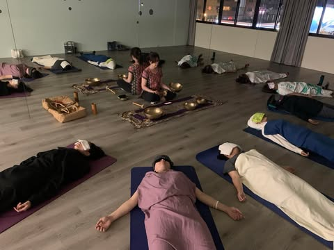
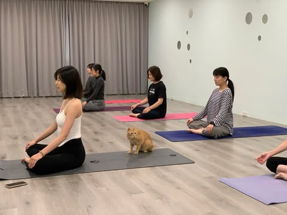
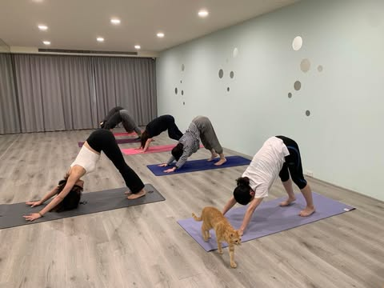

初階瑜珈
初階瑜珈課程旨在幫助練習者學習基礎動作，增進身心健康，適合初學者或想提升內在平衡的人群。
靈性瑜珈
靈性瑜珈是一種結合身心靈的練習方式，不僅僅專注於身體的動作與柔韌性，也更深入地探討內在心靈的提升與精神層面的成長。透過體位法（Asana）、冥想、呼吸控制（Pranayama）以及正念練習，靈性瑜珈幫助練習者與自己內心深處建立更深的連結。
靈性瑜珈的特點
- 專注內在平衡：幫助練習者專注於身心的能量流動與情緒管理。
- 冥想與呼吸練習：深入的冥想與呼吸技巧提升內心的寧靜。
- 喚醒靈性意識：與內在的靈性連結，探索生命的意義。
- 柔和與個性化：動作緩慢且具適應性，適合任何練習階段。
基礎瑜珈
適合初學者，學習基本動作與姿勢，打好瑜珈基礎。從簡單的姿勢開始，逐步掌握正確的呼吸與姿勢。
基礎瑜珈的特點
- 簡單易學：適合初學者，動作設計注重基礎知識的掌握。
- 正確的呼吸技術：將呼吸與動作相結合，幫助身體放鬆。
- 建立穩固基礎：提供對瑜伽姿勢的全面理解。
- 低強度練習：強度適中，適合不同年齡和體能的學員。
經絡瑜珈
結合經絡理論，促進能量流動，增進身體健康。通過特定的動作，激活身體內的經絡系統，達到調節身體的效果。
經絡瑜珈的特點
- 結合經絡理論：通過刺激身體的經絡，促進能量平衡。
- 改善血液循環：動作設計有助於改善血液與能量流動。
- 提升健康：增強免疫系統，幫助身體排毒。
- 針對性動作：特定的動作針對不同的經絡與身體部位。
陰瑜珈

透過長時間靜態拉伸，幫助身體深層放鬆與恢復。適合忙碌的現代人，放鬆身心並改善柔韌性。
陰瑜珈的特點
- 靜態拉伸：強調深層的靜態姿勢，保持時間較長。
- 深層放鬆：幫助練習者釋放壓力並恢復活力。
- 改善柔韌性：針對深層筋膜與關節，提升身體柔韌性。
- 身心放空：創造寧靜的心靈空間，適合需要紓壓的人群。